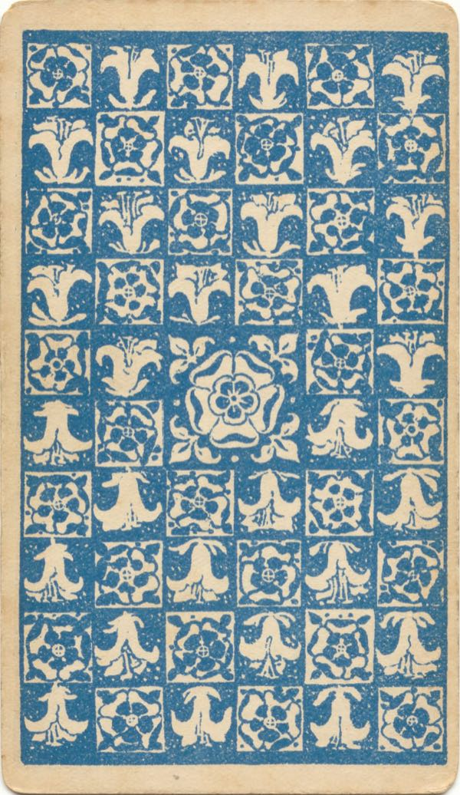

ライダー版 全78枚 ・ 清水流の解釈でおぼえる

カードの裏側を見る瞑想：裏面は此岸と彼岸の境目。目を閉じても思い出せるようになるまで眺めて、手を伏せる手印＋「シチ」を7回唱える三密加持で、あらゆる不幸を断つ魔切りに使う。
この画像は1909年初版（Roses and Lilies）の裏面デザイン（パブリックドメイン）。現行の市販デッキとは柄が異なるため、瞑想はお手持ちのデッキの裏柄で行ってもかまいません。
なぜライダー版か：赤・青・白・黒・灰・緑という限られた色だけで描かれ、8番「力」と11番「正義」を入れ替えて星の運行（獅子座・天秤座）に合わせてある。宇宙のリズムがそのまま形として閉じ込められた唯一無二のモデル——だから清水先生はライダー版だけを使う。
まずは絵を脳に入れる：意味が分からなくても、大アルカナ22枚を1枚ずつ眺めて頭（おでこ）に取り込むこと自体が開運（大アルカナ瞑想法）。このアプリの「絵 → 答え」モードはその練習台。
1枚引き（イエス・ノー）：占いに使うのは大アルカナ22枚＋エース4枚の計26枚。正位置＝やってよし、逆位置＝やめよ。範囲の「占い26枚」がこのセット。
当たるタロット（ナイトの変身）：占う前に、自分の星座のエレメントに対応するナイトのカードに手をかざし「我は◯◯のナイトなり」と変身してから占う。
出典：清水義久 タロット講座（2026-06-06／2026-07-04）ほか講義より。カード画像はパブリックドメイン（Wikimedia Commons／1909年オリジナル版）。
タップまたはスペースキーでめくる ・ ← → で移動 ・